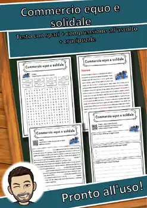
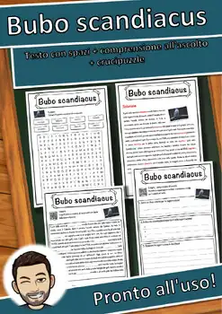
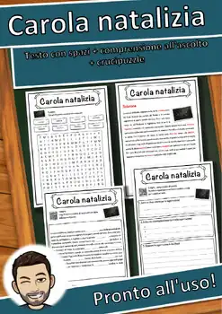
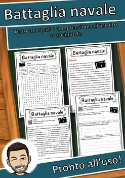

New resources
My newest resources appear here first. The list updates automatically.
48 resources

Ghana – Italian Reading Comprehension Worksheet (Scheda): Cloze & Listening

Geyser – Italian Reading Comprehension Worksheet (Scheda): Cloze & Listening
Gesù storico – Italian Reading Comprehension Worksheet (Scheda didattica)
Festa dei lavoratori – Italian Reading Comprehension Worksheet

Ermes – Italian Reading Comprehension Worksheet (Scheda): Cloze & Listening

Efesto – Italian Reading Comprehension Worksheet (Scheda): Cloze & Listening

Fegato – Italian Reading Comprehension Worksheet (Scheda): Cloze & Listening

Evoluzione – Italian Reading Comprehension Worksheet (Scheda): Cloze & Listening

Etiopia – Italian Reading Comprehension Worksheet (Scheda): Cloze & Listening

Estia – Italian Reading Comprehension Worksheet (Scheda): Cloze & Listening

Eruzione vulcanica – Italian Reading Comprehension Worksheet (Scheda didattica)

Economia – Italian Reading Comprehension Worksheet (Scheda): Cloze & Listening

Domatore – Italian Reading Comprehension Worksheet (Scheda): Cloze & Listening
Darmstadtio – Italian Reading Comprehension Worksheet (Scheda didattica)

Commercio equo e solidale – Italian Reading Comprehension Worksheet

Chestnut Tree Reading Comprehension Passages | Science Scavenger Hunt 5-6

Compasso – Italian Reading Comprehension Worksheet (Scheda): Cloze & Listening
Comedian Harmonists – Italian Reading Comprehension Worksheet (Scheda didattica)

Coboldo – Italian Reading Comprehension Worksheet (Scheda): Cloze & Listening
Claudio Tolomeo – Italian Reading Comprehension Worksheet (Scheda didattica)

Cittadino – Italian Reading Comprehension Worksheet (Scheda): Cloze & Listening

Circo – Italian Reading Comprehension Worksheet (Scheda): Cloze & Listening

Capo Verde – Italian Reading Comprehension Worksheet (Scheda): Cloze & Listening

Bubo scandiacus – Italian Reading Comprehension Worksheet (Scheda didattica)

Betula – Italian Reading Comprehension Worksheet (Scheda): Cloze & Listening

Cesio – Italian Reading Comprehension Worksheet (Scheda): Cloze & Listening

Carola natalizia – Italian Reading Comprehension Worksheet (Scheda didattica)

Carinzia – Italian Reading Comprehension Worksheet (Scheda): Cloze & Listening

Buco nero – Italian Reading Comprehension Worksheet (Scheda): Cloze & Listening

Bubo bubo – Italian Reading Comprehension Worksheet (Scheda): Cloze & Listening

Brevetto – Italian Reading Comprehension Worksheet (Scheda): Cloze & Listening

Ville de maisons de l’Avent – Bricolage, calendrier, gabarits, 1re-4e année

Berkelio – Italian Reading Comprehension Worksheet (Scheda): Cloze & Listening

Beat – Italian Reading Comprehension Worksheet (Scheda): Cloze & Listening

Battaglia navale – Italian Reading Comprehension Worksheet (Scheda didattica)

Battaglia – Italian Reading Comprehension Worksheet (Scheda): Cloze & Listening

Atena – Italian Reading Comprehension Worksheet (Scheda): Cloze & Listening

Benevento – Scheda: testo con spazi vuoti, ascolto e crucipuzzle

Bunsen Burner Reading Comprehension Passages | Science Scavenger Hunt 7-8

Bario – Italian Reading Comprehension Worksheet (Scheda): Cloze & Listening

Azoto – Italian Reading Comprehension Worksheet (Scheda): Cloze & Listening

Atmosphere Layers Reading Comprehension Passages | Science Scavenger Hunt 7-8

Attinio – Italian Reading Comprehension Worksheet (Scheda): Cloze & Listening

Astrattismo – Italian Reading Comprehension Worksheet (Scheda didattica)

Arte romanica – Italian Reading Comprehension Worksheet (Scheda didattica)

Arma – Italian Reading Comprehension Worksheet (Scheda): Cloze & Listening

Aria – Italian Reading Comprehension Worksheet (Scheda): Cloze & Listening

Advent House Town: Paper Advent Calendar Craft & Activities, Grades 3-4
No resources found – try a different search term or filter.